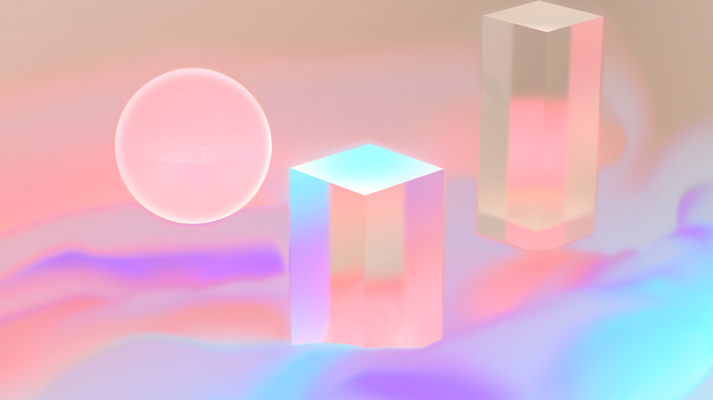
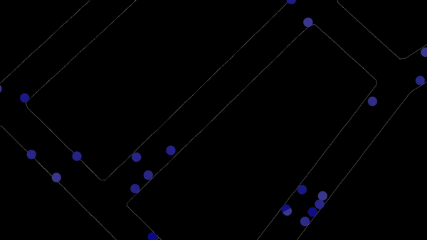
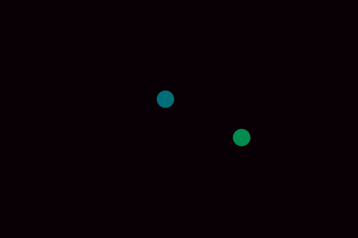
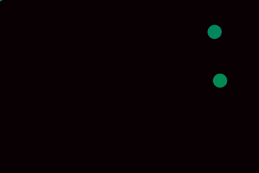
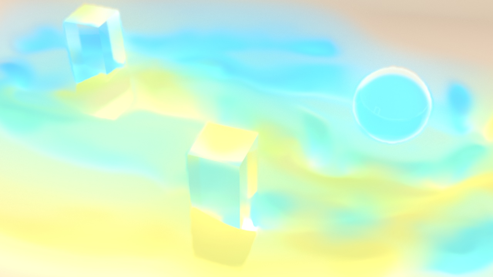

HUMANISING AUTONOMY
FIELD.io
Date : 2019
A design route for the brand identity
of Humanising Autonomy; showing the movements of people in a city
through abstract imagery.
For the majority of this design route I was the sole 3D artist;
creating animations, look-dev and rendering in Houdini with Redshift.
I created a VEX based sop solver that acted as a finite state machine,
representing different crowd behaviours that worked alongside another
artist's path finding system. The varying softness of the trails and
selectively in-focus parts of the scene are done in render using glass
and rayed attributes.






Examples of behviours defined in the FSM, from top
to bottom: checking the time (with a chance to speed up/down), waiting at
a crossing, meeting someone, being on the phone.
